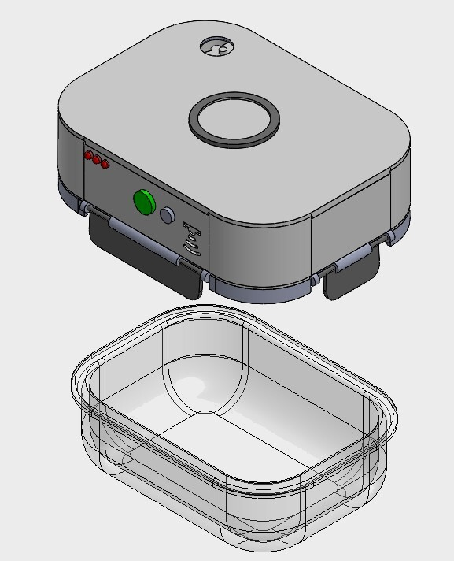
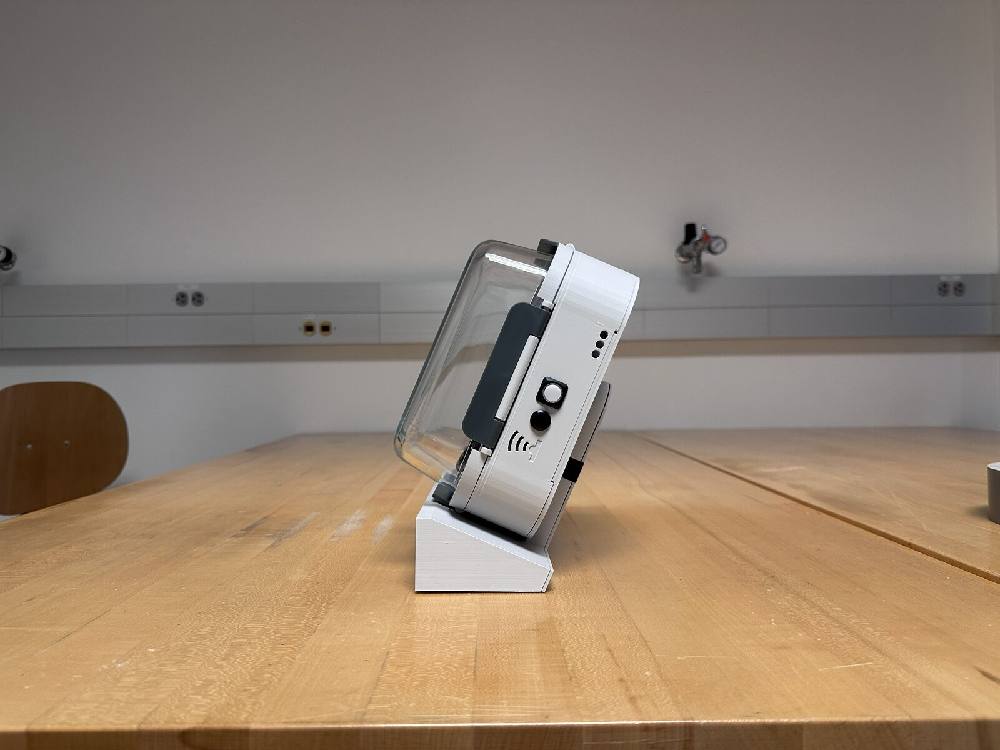
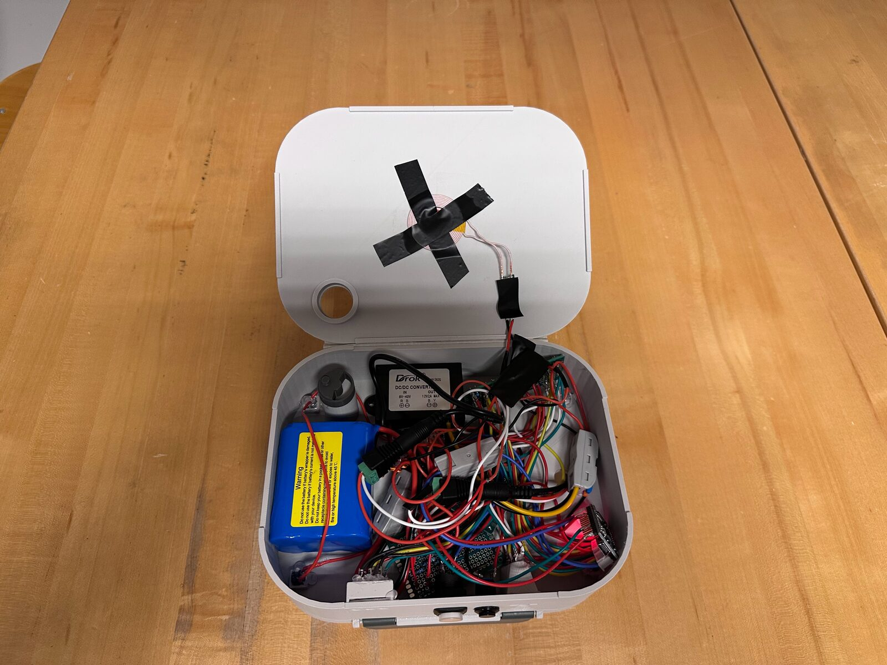
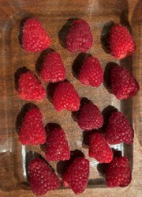

Cell
Samsung 30Q18650 Li-ion
A UV-C lid that slows produce spoilage inside an ordinary glass container. I owned the battery and charging system, the part that lets it run for weeks on a single wireless charge.

The UV-C technology was already proven. A previous OSU team had patented it and built a working prototype that measurably slowed spoilage. Our job was the harder half: make it a product people would actually live with, and differentiate it from a patented competitor (a Swedish device that can't be sold in the US).
That drove three decisions before any of my subsystem work started:

My part of this was the one that makes "runs for weeks, charges wirelessly, never leaks" actually true: the power system.
My scope was powering UV-C inside a sealed, wireless-only package. Jump to what you care about below.
UV-C emitters are the load. The package is the hard part.
The device doesn't run continuously. It runs a short UV-C cycle now and then, so "weeks between charges" and "a few hours of continuous run time" are the same battery. I sized the pack to the duty cycle, then picked a cell and configuration that fit the lid and the current draw.
| Mode | Continuous run time | Three-minute cycles |
|---|---|---|
| Low | 10.8 hr | 216 |
| Medium | 6.4 hr | 128 |
| High | 4.5 hr | 90 |
| Competitor (reference) | — | ~20 cycles |
USB-C was the obvious default, and I rejected it. In a sealed, wet, fridge-bound product, a USB-C port means a hole in the enclosure, exposed contacts, and a cable per lid on the counter. Inductive (Qi) charging removes all three: the enclosure stays fully sealed, there are no contacts to corrode, and a lid just gets set down to charge.
Moving to inductive charging was my call. It cost complexity inside the lid (a receiver coil and a boost stage) and bought back the thing that actually matters for a kitchen product: a sealed device with nothing to plug in.

Wireless input to a UV-C load means the voltage has to be built up and held steady across the whole discharge. The chain I designed:
The last problem was fitting all of it, the 3S2P pack, charger, BMS, boost stage, receiver coil, and UV-C drivers, into a sealed, dishwasher-safe lid that still latches and stays low-profile. That packaging constraint drove cell choice and board layout as much as the electrical requirements did.

The safety interlock, a compression switch that blocks UV-C unless the container is sealed, was another teammate's design. My job on that boundary was making sure the power system fed it cleanly and never energized the emitters outside a valid, closed-lid cycle.
We validated the product end to end with a seven-day produce test: one batch of raspberries split into a treated group and an untreated control, stored the same way, photographed every 24 hours.



Read each row left to right. By day 7 the treated berries stayed firm with no mold or odor; the control broke down with visible mold and seepage.
This was my first real electronics project. I came in with almost no hardware experience and it was the first time I ever soldered, so getting an embedded power system to behave reliably and sealing it into a lid was a genuine step up for me. It's a big part of why I want to keep doing electromechanical product work.
The rest of the learning was cross-functional: working with teammates from different engineering backgrounds, communicating a design clearly enough to defend it, and dealing directly with purchasing to get parts in hand. On cost, we came in at $316.90 against a $222.90 proposal, with the circuit alone running from an estimated $68 to $162, a quick lesson in how fast an electronics BOM creeps once protection and redundancy get added.
Open to conversations about consumer hardware, mechanisms, and exterior systems.